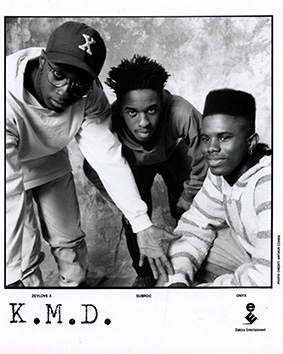
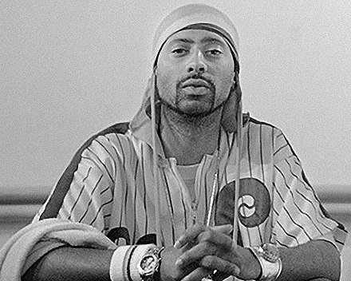
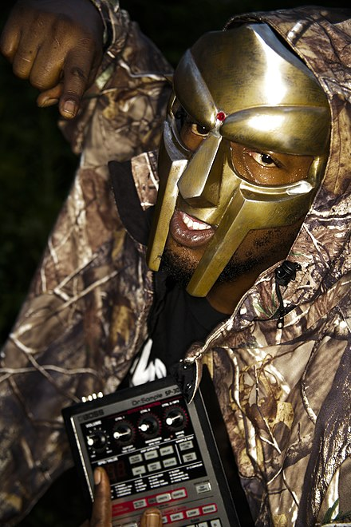
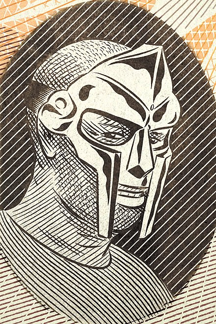
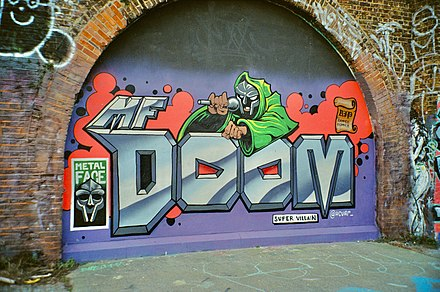

Daniel Dumile (/ˈduːməleɪ/ DOO-mə-lay; July 13, 1971 – October 31, 2020), also known by his stage name MF Doom or simply Doom (both stylized in all caps), was a British-American rapper and record producer. Noted for his intricate wordplay, signature metal mask, and "supervillain" stage persona, Dumile became a major figure of underground hip hop and alternative hip hop in the 2000s. After his death, Variety described him as one of the scene's "most celebrated, unpredictable and enigmatic figures".
Dumile was born in London and moved to Long Island, New York, at a young age. He began his career in 1988 as a member of the trio KMD, performing as Zev Love X. The group disbanded in 1993 after the death of member DJ Subroc, Dumile's brother. After a hiatus, Dumile reemerged in the late 1990s. He began performing at open mic events while wearing a metal mask resembling that of the Marvel Comics supervillain Doctor Doom, who is depicted on the cover of his 1999 debut solo album Operation: Doomsday. He adopted the MF Doom persona and rarely made unmasked public appearances thereafter.
During Dumile's most prolific period, the early to mid-2000s, he released the acclaimed Mm..Food (2004) as MF Doom, as well as albums released under the pseudonyms King Geedorah and Viktor Vaughn. Madvillainy (2004), recorded with the producer Madlib under the name Madvillain, is often cited as Dumile's magnum opus and is regarded as a landmark album in hip hop. Madvilliany was followed by another acclaimed collaboration, The Mouse and the Mask (2005), with the producer Danger Mouse, released under the name Danger Doom.
Though he lived the majority of his life in the United States, Dumile never gained American citizenship. In 2010, he was denied reentry after returning from an international tour for his sixth and final solo album, Born Like This (2009). He relocated to London and, in his final years, worked mostly in collaboration with other artists, releasing albums with Jneiro Jarel (as JJ Doom), Bishop Nehru (NehruvianDoom), and Czarface (Czarface Meets Metal Face and the posthumous Super What?). Dumile died in 2020 from angioedema following a reaction to a blood pressure medication.
Dumile was born in Hounslow, London, on July 13, 1971, the son of a Trinidadian mother and Zimbabwean father. He was the eldest of five children. According to Dumile, he was conceived in the United States, and happened to be born in London because his mother was visiting family. As a child, Dumile moved with his family to Long Island, New York, and grew up in Long Beach on Long Island. He said he had no memory of his London childhood and his parents had no affiliation with British culture. However, he remained a British citizen, never gaining American citizenship.
Dumile began DJing during the summer after third grade. As a child, he was a fan and collector of comic books and earned the nickname "Doom" (a phonetic play on the name Dumile) among friends and family.

As Zev Love X, Dumile formed the hip hop group KMD in 1988 with his younger brother DJ Subroc and Rodan, who was later replaced by Onyx the Birthstone Kid. A&R representative Dante Ross learned of KMD through the hip hop group 3rd Bass and signed them to Elektra Records. Their recording debut came on 3rd Bass's song "The Gas Face" on The Cactus Album, followed in 1991 by their debut album Mr. Hood. Dumile performed the last verse on "The Gas Face"; according to Pete Nice's verse on the track, Dumile created the phrase.
On April 23, 1993, just before the release of the second KMD album, Black Bastards, Subroc was struck by a car and killed while crossing the Long Island Expressway. Dumile completed the album alone over the course of several months, and it was announced with a release date of May 3, 1994. KMD was dropped by Elektra and the album went unreleased due to its controversial cover art, which featured a cartoon of a stereotypical pickaninny or sambo character being hanged.
After his brother's death, Dumile retreated from the hip hop scene from 1994 to 1997, living "damn near homeless, walking the streets of Manhattan, sleeping on benches". In the late 1990s, he settled in Atlanta; he had moved to Georgia in the mid-90s. According to interviews with Dumile, he was "recovering from his wounds" and swearing revenge "against the industry that so badly deformed him". Black Bastards had been bootlegged by that time, but was not officially released until 2000.
In 1997 or 1998, Dumile began freestyling incognito at open-mic events at the Nuyorican Poets Café in Manhattan, obscuring his face by putting tights over his head. He turned this into a new identity, MF Doom, with a mask similar to that of Marvel Comics supervillain Doctor Doom. He later used a mask based on the character Maximus from the 2000 film Gladiator.
Bobbito Garcia's Fondle 'Em Records released Operation: Doomsday, Dumile's first full-length LP as MF Doom, in 1999. Dumile's collaborators on Operation: Doomsday included fellow members of the Monsta Island Czars collective, for which each artist took on the persona of a monster from the Godzilla films. Dumile went by the alias "King Geedorah". a three-headed golden dragon space monster modeled after King Ghidorah. The album's productions sampled cartoons including Fantastic Four, something that became a staple of his music later on. Jon Caramanica, in a review of Operation: Doomsday for Spin, emphasized the contrast between Dumile's flow as Zev Love X in KMD and his revised approach as a solo artist: "Doom's flow is muddy, nowhere near the sprightly rhymes of KMD's early days, and his thought process is haphazard." Caramanica revisited Operation: Doomsday in The New York Times in 2021, calling it "one of the most idiosyncratic hip-hop albums of the 1990s, and one of the defining documents of the independent hip-hop explosion of that decade". Cyril Cordor, in a review for AllMusic, described Operation: Doomsday as Dumile's "rawest" lyrical effort.
In 2001, Dumile began releasing his Special Herbs instrumentals series under the pseudonym Metal Fingers. In a review of a 2011 box set containing ten volumes of the Special Herbs series, Pitchfork observed that the instrumentals stand on their own without vocal tracks: "most of these tracks sound plenty 'finished' even in rhyme-less form".

In 2003, Dumile released the album Take Me to Your Leader under his King Geedorah moniker. In Pitchfork, Mark Martelli described Take Me to Your Leader as close to a concept album, noting how it lays out the "mythos" of the eponymous King Geedorah. Martelli praised the album, particularly tracks such as "One Smart Nigger" which, in his view, were superior to other artists' attempts at political hip hop. Fact, in a brief notice for a 2013 reissue of Take Me to Your Leader, called it "arguably the most cinematic" of Dumile's albums from the turn of the 21st century.
Later in 2003, Dumile released the LP Vaudeville Villain under the moniker Viktor Vaughn (another play on Doctor Doom, who is also known as Victor von Doom). NME described the Viktor Vaughn persona as "a time travelling street hustler". Pitchfork named Vaudeville Villain the week's best new album and highlighted its lyricism, writing that Dumile was one of the best writers in rap.
Dumile's breakthrough came in 2004 with the album Madvillainy, created with producer Madlib under the group name Madvillain. They recorded the album in a series of sessions over two years before a commercial release on March 23, 2004. Madvillainy was a critical and commercial success, and has since become known as Dumile's masterpiece.
Also in 2004, Dumile released VV:2, a follow-up LP under the Viktor Vaughn moniker. Nathan Rabin noted in The A.V. Club that VV:2, coming as it did after the commercial and critical success of Madvillainy, represented an unusual career choice for Dumile whereby he went "deeper underground" instead of embracing wider fame.
Later in 2004, the second MF Doom album Mm..Food was released by Rhymesayers Entertainment. Pitchfork gave the album a positive review. Nathan Rabin described it as a "crazy pastiche" but argued that it grew more coherent on repeated listening.
Although still an independent artist, Dumile took a bigger step towards the mainstream in 2005 with The Mouse and the Mask, a collaboration with the producer DJ Danger Mouse under the group name Danger Doom. The album, released on October 11, 2005, by Epitaph and Lex, was developed in collaboration with Cartoon Network's Adult Swim and featured voice actors and characters from its programs (mostly Aqua Teen Hunger Force). The Mouse and the Mask reached #41 on the Billboard 200. Critic Chris Vognar, discussing the role of comedy in hip hop, argued that "Doom and Danger exemplify an absurdist strain in recent independent hip-hop, a willingness to embrace the nerdy without a heavy cloak of irony".In the same year, Dumile appeared on the second Gorillaz album, Demon Days.
Dumile produced tracks for both of Ghostface Killah's 2006 albums Fishscale and More Fish. In February 2013, Ghostface Killah said that he and Dumile were in the process of choosing tracks for a collaborative album. In 2015, Ghostface Killah announced that the album, Swift & Changeable, would be released in 2016, and later posted promotional artwork for the collaboration. It remains unreleased.
Dumile's Born Like This was released on Lex Records on March 24, 2009. The album was Dumile's first solo album to chart in the US. In a largely favorable review for Pitchfork, Nate Patrin cast the album as a return to form for Dumile, following a period of limited output. He observed that Dumile's lyrics and flow—"a focused rasp that's subtly grown slightly more ragged and intense"—were darker than on earlier records. He also highlighted the overtly homophobic "Batty Boyz", a diss track against unnamed rappers. Steve Yates, reviewing the album in The Guardian, likewise saw Born Like This as hearkening back to Dumile's earlier output. Yates felt it presented Dumile at "his scalpel-tongued, scatter-mouthed best". Both Patrin and Yates noted the influence of Charles Bukowski on Born Like This: the first line of Bukowski's poem "Dinosauria, We" gives the album its title.

In early 2010, Dumile released the EP Gazzillion Ear on Lex, a compilation of remixes of "Gazzillion Ear" from Born Like This, including a remix by Thom Yorke and two mixes by Jneiro Jarel. A further remix by Madvillain featuring a voicemail message from Kanye West was released online. The EP coincided with Dumile's first performances outside North America. On March 5, 2010, Lex and Sónar presented the first Doom show in London, at the Roundhouse in Camden. Expektoration, Dumile's second live album, was released on September 14, 2010, through Gold Dust. In a review of Expektoration, Pitchfork noted that Dumile's vocal performance was more energetic than on his recordings, which it characterized as "laidback" by comparison.
After completing his European tour, Dumile was refused re-entry into the United States. He settled in the UK in 2010. Key to the Kuffs, an album Dumile made in collaboration with the producer Jneiro Jarel as JJ Doom, was released on August 20, 2012, and included guest features from Damon Albarn, Beth Gibbons of Portishead, Khujo Goodie of Goodie Mob and Dungeon Family, and Boston Fielder. Reviews of Key to the Kuffs in Pitchfork and Fact emphasized its references to Dumile's "exile" in the United Kingdom, while Resident Advisor noted its play on Britishisms in tracks like "Guv'nor".
NehruvianDoom, Dumile's collaboration with the rapper Bishop Nehru, was released on October 7, 2014. Dumile produced all the tracks on NehruvianDoom, often using beats developed in the Special Herbs series; vocals are primarily Nehru's, with some contributions from Dumile. The album was Nehru's major label debut. The limitations of Nehru's artistic achievement on the album were stressed by critics due to his relative youth (he was still in his teens when the album was produced) and the album's briefness, lasting just over 30 minutes. Dumile's contributions were also seen as limited: Pitchfork wrote that he often seemed on "autopilot", and XXL suggested that neither he nor Nehru were able to "push the envelope".
In August 2017, Adult Swim announced a Doom compilation, The Missing Notebook Rhymes, that would consist of songs from his upcoming projects and featured appearances on other artists' songs. The Adult Swim website was to release one new song per week over the course of 15 weeks. However, the arrangement was canceled in September after the release of only seven tracks.
In February 2018, Dumile and Czarface released "Nautical Depth", the first single from their collaborative album Czarface Meets Metal Face. The album was released on March 30, 2018. In a lukewarm review for Pitchfork, Mehan Jayasuriya compared verses by Open Mike Eagle favorably to Dumile's, but noted that Dumile's contribution to "Nautical Depth" exhibited his "once razor-sharp lyricism". Ben Beaumont-Thomas, in The Guardian, was more positive, noting Dumile's "stoner surrealism" in "Captain Crunch".
Aside from the album with Czarface, Dumile's musical output in the final three years of his life was limited to one-off guest appearances on other artists' tracks. Posthumous releases included appearances on two songs for the video game Grand Theft Auto Online: "Lunch Break", with Flying Lotus; and "The Chocolate Conquistadors", with BadBadNotGood, made for the game's content update The Cayo Perico Heist. Shortly after Dumile's death was announced, Flying Lotus revealed that they had been working on an EP. Having been completed in early 2020 but later delayed due to the COVID-19 pandemic, Dumile's second collaborative album with Czarface and first posthumous release, Super What?, was released in May 2021.

Dumile's lyrics are known for wordplay. Bradley and DuBois, describing Dumile as "among the most enigmatic figures in hip-hop", wrote that Dumile's "raspy baritone weaves an intricate web of allusions drawn from comic books and metaphysics along with seeming nonsense and non sequiturs". According to an obituary in The Ringer, his flow was "loose and conversational, but delivered with technical precision", and his use of rhyme and meter eclipsed that of Big Pun and Eminem.
Dumile's production work frequently incorporated samples and quotations from film. A review of Special Herbs volumes 5 and 6 in CMJ New Music Monthly compared Dumile's beats to "soul jazz".
Dumile created the MF Doom character as an alter ego with a backstory he could reference in his music. The character combines elements from the Marvel Comics supervillain Doctor Doom, Destro, and the Phantom of the Opera; like Doctor Doom and Phantom, Dumile referred to himself in the third person while in character. His signature mask was similar to that of Doctor Doom, who is depicted rapping on the cover of Dumile's 1999 debut album Operation: Doomsday.
Dumile wore the mask while performing, and would not be photographed without it, except for short glimpses in videos and in earlier photos with KMD. Later versions of the mask were based on a prop from the 2000 film Gladiator. Academic Hershini Bhana Young argued that, by appropriating the Doctor Doom mask, Dumile "positions himself as enemy, not only of the music industry but also of dominant constructions of identity that relegate him as a black man to second-class citizenship".
Dumile sometimes sent stand-ins to perform in the mask, which he saw as a "logical extension" of the concept but angered audiences. Dumile initially claimed that he had lost weight and thus looked and sounded different. At a 2010 show in Toronto, an imposter was booed off stage before being replaced by Dumile. In an interview with The New Yorker, Dumile described himself as the "writer and director" of the character and that he "might send a white dude next ... Whoever plays the character plays the character."
In November 2019, during his performance at the Adult Swim Festival, the electronic artist Flying Lotus announced that he would be joined onstage by Dumile. Instead, the masked figure who appeared on stage was revealed as the comedian Hannibal Buress. Dumile's involvement in the prank has not been confirmed.

Dumile was celebrated in independent hip hop. After his death, the producer Flying Lotus wrote of Madvillainy: "All u ever needed in hip-hop was this record. Sorted. Done. Give it to the fucking aliens." The English musician Thom Yorke, who twice collaborated with Dumile, wrote: "He was a massive inspiration to so many of us, changed things... For me the way he put words was often shocking in its genius, using stream of consciousness in a way I'd never heard before." Stereogum, reviewing Operation: Doomsday on its 20th anniversary, noted Dumile's "formative" influence on younger rappers. El-P of Run the Jewels described him as a "writer's writer", while Q-Tip called him "your favorite rapper's favorite rapper".
Dumile was married to Jasmine Dumile for an unknown period until his death in October 2020. The couple had five children. Dumile's son Malachi died at the age of 14 from unspecified causes in late 2017.
Dumile's worldview was informed by Islam and the Afrocentrism espoused by African-American Muslims. His parents raised him and his brother as Muslims in the Five-Percent Nation, a religious black nationalist movement influenced by Islam. Dumile's father taught him about pan-African history, including historical figures such as Marcus Garvey and Elijah Muhammad—lessons that he then strove to impart upon his peers.
By the early 1990s, Dumile and the other members of KMD identified as a member of the Ansaar Allah Community, later known as the Nuwaubian Nation. In their music, the members of KMD professed a religious message based on tenets of Nuwaubianism, which Dumile distinguished from Five-Percent beliefs in an early interview. In the music video for "Peachfuzz", Dumile and the other members of KMD wear kufi caps. By 2000, though he was no longer as strictly observant, Dumile still participated in Nuwaubian events such as the Savior's Day celebration at the Tama-Re compound in Georgia and held a positive opinion of the community.
Although Dumile lived in the United States for most of his life, he never became a naturalized citizen. He acquired a British passport prior to his 2010 European tour; after completing the tour later that year, he was refused re-entry to the United States. The European tour was only his second international tour, and he had previously avoided leaving the United States; he had believed he would be able to secure reentry based on his long-term residency and family connections.
The denial of reentry forced Dumile apart from his wife and children, and for nearly two years he saw them only via video calls or during their brief visits to the United Kingdom. They were reunited when his family moved to London in 2012. That year, Dumile said he was "done with the United States". At the time of his death, he was living in Leeds.
In October 2020, Dumile was admitted to St James's University Hospital in Leeds, England, after suffering respiratory problems. On October 31, he died from angioedema, a rare reaction to a blood pressure medication he had been recently prescribed. He had suffered from high blood pressure and kidney disease. Due to the COVID-19 lockdown, Dumile's wife, Jasmine, was not allowed to visit him in the hospital until the day of his death. Jasmine announced Dumile's death on December 31, 2020. The cause of death was not announced until July 2023.
Many musicians made tributes to Dumile. Dumile's 2004 instrumental track "Coffin Nails" was included on U.S. President Joe Biden's inauguration playlist. The decision was criticized by some of Dumile's fans, as Biden was vice president in 2010 when Dumile was refused reentry to the United States.
Main articles: MF Doom discography and MF Doom production discography
See also: KMD § Discography
Solo albums
Take Me to Your Leader (2003, as King Geedorah)
Vaudeville Villain (2003, as Viktor Vaughn)
VV:2 (2004, as Viktor Vaughn)
Born Like This (2009, as Doom)
Collaborative albums
Mr. Hood (1991, as Zev Love X with KMD)
Black Bastards (2000, as Zev Love X with KMD)
Madvillainy (2004, with Madlib as Madvillain)
Special Herbs + Spices Volume 1 (2004, with MF Grimm)
The Mouse and the Mask (2005, with Danger Mouse as Danger Doom)
Key to the Kuffs (2012, with Jneiro Jarel as JJ Doom)
NehruvianDoom (2014, with Bishop Nehru as NehruvianDoom)
Super What? (2021, with Czarface)
Credit to MF Doom's wikipedia page
Other information to browse:
Olivia Rodrigo
Indian Classical Dance
Frogs